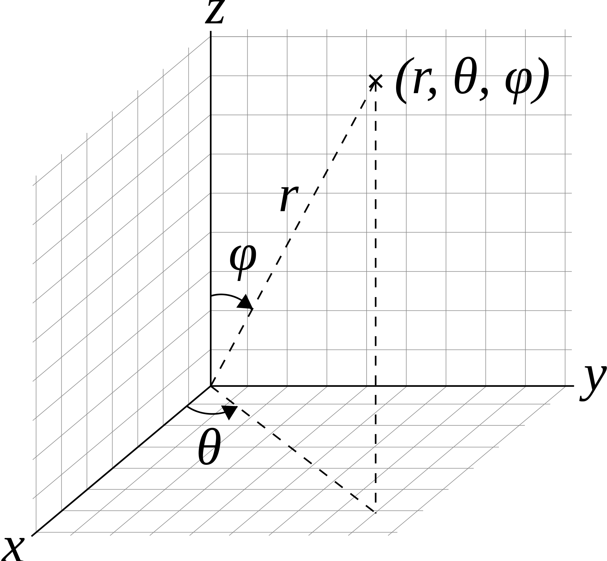

Common three-dimensional coordinate systems

| $x=ρ\cos φ=r\sin θ\cos φ$; | $ρ=√{x^{2}+y^{2}}$; |
| $y=ρ\sin φ=r\sin θ\sin φ$; | $r=√{x^{2}+y^{2}+z^{2}}$; |
| $z=r\cos θ$; | $θ=\arccos (z/r)$; |
| $φ=\arctan (y/x)$. |
| coordinate system: |
rectangular |
cylindrical polar |
spherical polar |
|---|
| coordinates of point $P$: | $$(x,y,z)$$ | $$(ρ,φ,z)$$ | $$(r,θ,φ)$$ |
| volume element: | $$dxdydz$$ | $$ρdρdφdz$$ | $$r^{2}\sin θdrdθdφ$$ |
| metric elements$^{a}$ $(h_1,h_2,h_3)$: | $$(1,1,1)$$ |
$$(1,ρ,1)$$ | $$(1,r,r\sin θ)$$ |
$^{a,b,c}$
In an orthogonal coordinate system (parameterised by coordinates $q_1,q_2,q_3$),
the differential line element $dl$ is obtained from:
$$(dl)^2=(h_1dq_1)^2+(h_2dq_2)^2+(h_3dq_3)^2$$
$●$ Gradient
| Rectangular coordinates: |
$\bo ∇f={∂f}/{∂x}\bo x↖{→}+
{∂f}/{∂y}\bo y↖{→}+{∂f}/{∂z}\bo z↖{→}$ |
| Cylindrical coordinates: |
$\bo ∇f={∂f}/{∂ρ}\bo ρ↖{→}+
{1}/{ρ}{∂f}/{∂φ}\bo φ↖{→}+{∂f}/{∂z}\bo z↖{→}$ |
| Spherical polar coordinates: |
$\bo ∇f={∂f}/{∂r}\bo r↖{→}+
{1}/{r}{∂f}/{∂θ}\bo θ↖{→}+{1}/{r\sin θ}{∂f}/{∂φ}\bo φ↖{→}$ |
| General orthogonal coordinates: |
$\bo ∇f={\bo q_{1}↖{→}}/{h_1}{∂f}/{∂q_1}
\bo q_{1}↖{→}+{\bo q_{2}↖{→}}/{h_2}{∂f}/{∂q_2}\bo q_{2}↖{→}+
{\bo q_{3}↖{→}}/{h_3}{∂f}/{∂q_3}\bo q_{3}↖{→}$ |
where
$f$ is scalar field, $∇$ is gradient, $→$ unit vector, $q_i$ and $h_i$ basis
and metric element respectively
$●$ Divergence
| Rectangular coordinates: | $(\bo ∇,\bo A↖{→})={∂\bo A_{x}}/{∂x}+
{∂\bo A_{y}}/{∂y}+{∂\bo A_{z}}/{∂z}$ |
| Cylindrical coordinates: | $(\bo ∇,\bo A↖{→})={1}/{ρ}{∂(ρ\bo A_{ρ})}/{∂ρ}+
{1}/{ρ}{∂\bo A_{φ}}/{∂φ}+{∂\bo A_{z}}/{∂z}$ |
| Spherical polar coordinates: | $(\bo ∇,\bo A↖{→})={1}/{r^2}{∂(r^2\bo A_{r})}/{∂r}$
$+{1}/{r\sin θ}{∂(\bo A_{θ}\sin θ)}/{∂θ}+{1}/{r\sin θ}{∂\bo A_{φ}}/{∂φ}$ |
| General orthogonal coordinates: |
$(\bo ∇,\bo A↖{→})={1}/{h_1h_2h_3}\[{∂}/{∂q_1}\(\bo A_{1}h_2h_3\)$
$+{∂}/{∂q_2}\(\bo A_{2}h_3h_1\)+{∂}/{∂q_3}\(\bo A_{3}h_1h_2\)\]$ |
...